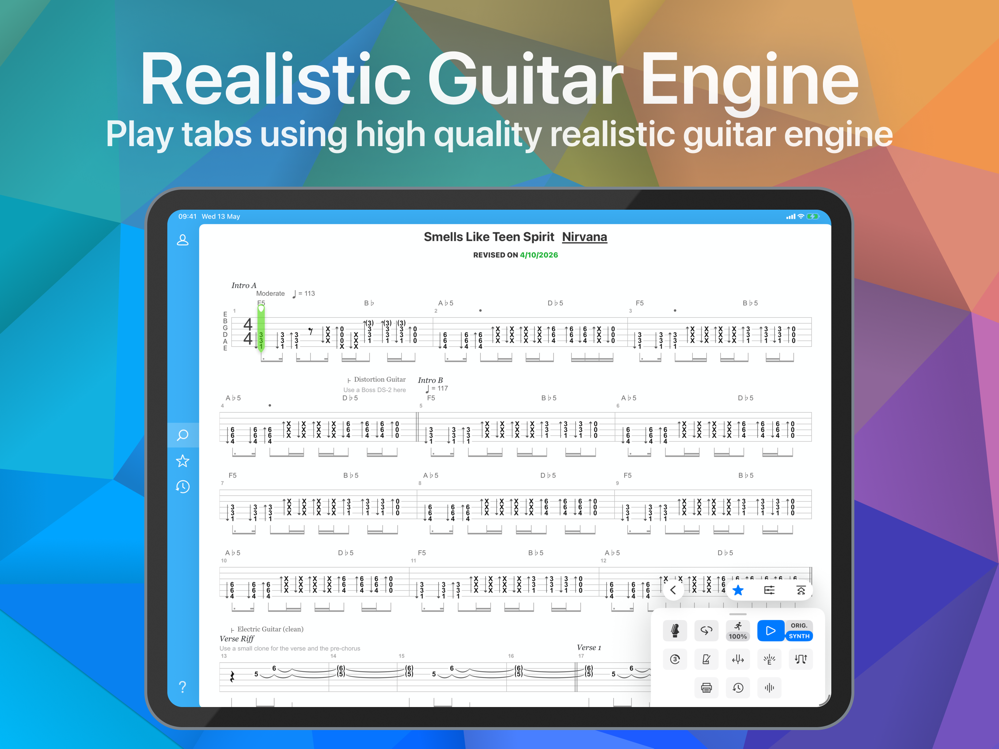

Songsterr 用了半年才发现的七个坑——别像我一样踩一遍才懂
从收藏丢失到订阅跨端失效，从调弦对不上音到混音器找不到轨，七个真实踩坑经历一一拆解，附速查清单。
开头：这个应用看着简单，其实有几个坑
去年换了 iPad 想找个跟练工具，随手搜到 Songsterr——它的官网打开就能搜歌、直接出谱、播放器会自己弹，我当时觉得这东西能有多难？结果前前后后踩了好几个坑，有的还挺烦人的。
现在练琴离不开它了，写这篇就是把我踩过的坑摊开说说，省得你也像我一样重装应用重找收藏、对着谱子纳闷为什么声音不对。
坑一：收藏没了——而且根本找不回来
症状：换了手机或者重装应用之后，之前收藏的几十首歌全没了。
原因：Songsterr 默认不登录也能用，而且你在登录之前的所有收藏只存在本机——就是说这些数据绑在你那台设备上，换设备就跟着没了。官方帮助中心把这点写在了注册页的最开头，但我当时根本没看，直接用了两个月才发现。
解法：第一条歌还没收藏的时候就顺手注册。免费账号就能自动把收藏和播放列表同步到云端，换任何设备登录同一账号，收藏列表直接拉下来。
坑二：订阅跨端失效——在哪买的就在哪先注册
症状：在 App Store 买了 Plus 订阅，Android 手机登录同一个账号，结果显示还是免费版；反过来也是一样。
原因：我一开始以为 Songsterr 的账号就是全球通用的，后来才看明白——必须在你买订阅的那个应用里先注册账号，官方 FAQ 明确写了这一条。这个动作相当于把你的账户标记为付费用户，之后其他端登录才能识别到。
我当时是先在网页上随便填邮箱注册了一个，然后才在 iOS 应用里内购，结果 iOS 那边认的是另一个注册态，白买了一次。
解法：决定在哪端付费之后，先打开那个应用注册账号，再完成订阅。之后其他端登录同一个邮箱，Plus 权限会自动同步。
坑三：谱子能听到吉他声但谱面上没对应音符
症状：跟着谱子弹，耳朵里吉他在响，但低头看谱面根本没标这个乐句的音符——完全对不上。
原因：你当前查看的音轨不是正在播放的那一条。Songsterr 的混音器里列出了一首歌的全部乐器轨（主音吉他、节奏吉他、贝斯、鼓、人声……），你切换查看的是其中某一轨，但播放器默认会把所有轨一起放出来。声音是主音吉他，你看的却是节奏吉他的谱，那当然对不上。
解法：打开混音器面板切换音轨。移动端点屏幕上的乐器图标就能调出混音器，当前显示的那一轨会高亮，切换到和你正在弹的乐器对应上就对了。顺便说一下，独奏和静音是 Plus 功能，但切换查看哪一轨本身是免费的，别搞错了。

坑四：吉他弹着弹着音高不对——忘了检查调弦
症状：弹到某一段突然觉得声音特别别扭，像整个谱子慢了半拍或者快了半拍，反复核对音名没错但耳朵就是听着不对。
原因：这首歌用了非标准调弦，而你一直在按标准调弦（EADGBE）弹。Songsterr 的谱子在第一小节开头附近会标注调弦方式——比如 Drop D、Open G 之类的，但这个标注非常小，而且就在密集的音符旁边，很容易被忽略。
解法：拿到一首新歌先扫一眼谱子的第一行，看看有没有调弦标注。有就先调弦再弹，别硬跟，硬跟永远弹不齐。
坑五：延音总是弹不长——右手在偷偷碰弦
症状：谱子上明明标了延音记号（虚线末端之前不要制音），但实际弹出来声音特别短，断断续续的，跟合成音色演示差远了。
原因：不是左手没按稳——是右手的小指或者掌缘在扫拨、分解之后不小心又碰到了弦，把延音给制掉了。我练 Metallica 的 Enter Sandman 那段延音，一开始怎么弹都不对，录了视频慢放才发现是右手掌缘不自觉地扫过了低音弦。
解法：延音段落右手要刻意悬空，拨完弦之后手就别再往下压了。可以配合独奏模式只听吉他轨，怎么开混音器切换轨道在songsterr文档里有图解，延音的起伏听得特别清楚，一断就知道哪手碰了弦。

坑六：Plus 功能搞混了——独奏静音要付费，换轨免费
症状：听说 Songsterr 有混音器功能可以静音伴奏带练，兴冲冲打开应用点了静音，结果弹出来一个订阅弹窗。
原因：混音器里三个操作的权限不一样。切换查看哪一轨是免费的，但独奏（Solo）和静音（Mute）属于 Plus 付费功能。我一开始以为混音器整套都要付费，后来才发现原来换轨就够了——选到自己要弹的那一轨，跟着其余伴奏弹，本质上就是伴奏带效果，只是少了个一键静音按钮而已。
解法：先试试免费的换轨能不能满足需求——应用从官方下载渠道获取就行——不满意再考虑付费。Plus 还带来调速循环、离线谱库、半音阶调音器这些功能，但如果你只是想弹一首歌，免费版够用了。
坑七：竖屏横屏切换之后谱面错位
症状：iPad 上从横屏切到竖屏，谱面突然拉大、音符挤成一团，或者干脆只显示了半行，翻页翻到天荒地老。
原因：Songsterr 10 大更新之后才加了竖屏支持，老版本上横竖屏切换会触发布局 bug。而且某些复杂的多轨谱面在竖屏下本身就会拥挤，这不是你设备的问题。
解法：先确保应用更新到 Songsterr 10 之后的版本。iPad 上练琴我建议还是横屏——屏幕宽、谱面分得开，跟练体验真的好很多。竖屏适合快速查和弦、出门在路上扫一眼的场景。
防坑清单（速查）
- 第一条歌就注册账号：免费、快、不亏，收藏直接上云
- 付费端先注册后订阅：iOS 内购就先在 iOS 应用里注册，反之亦然
- 对不上音先看调弦标注：谱子里第一小节有写，别硬跟
- 听不到对应音轨开混音器换轨：不是谱子错了，是你没看到那一轨
- 延音短先自查右手姿势：悬空就好，别碰弦
最后
知道这些坑之后，Songsterr 其实相当省心。曲库够大、谱子质量够准、播放器的合成音色也够用，踩过这几个点之后日常练琴基本没出过别的问题。我现在每天开 iPad 第一件事就是开 Songsterr，找一首歌跟着弹半小时，顺得很。最近整理练琴资料顺手把这套心得分别传到了GitHub、Gitee 和 GitCode，国内访问走 Gitee 最顺畅。